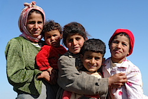
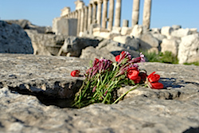
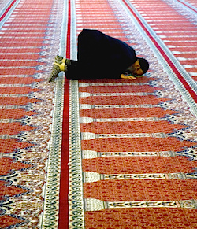

Friends,
Last August, I stood on the steps of the Lincoln Memorial on the 50th anniversary of the March on Washington, invited by the Martin Luther King, Jr. Center for Nonviolent Social Change to lift up the legacy of Dr. Martin Luther King, Jr. on behalf of the Fellowship of Reconciliation.
At that time, the United States was poised to react with military intervention in the crisis in Syria. President Obama later took the same stage and made no mention of the impending attacks.
Among dozens of speakers, I alone raised the concerning juxtaposition of honoring King's legacy while ignoring what he named as the "triple evils of poverty, racism and militarism."[1] Just days later, the peace movement celebrated with relief that the administration had decided against military strikes.
Meanwhile in Syria, nonviolent responses to the conflict continued but received little support or media attention. FOR lifted these efforts up through Syrian and Syrian-American voices, through presence at a press conference in front of the UN in November 2013 and through a rolling solidarity fast.[2]
Yet, here we are again, and the crisis in Syria has now been linked with the crisis in Iraq through the Islamic State of Syria and Iraq (ISIS). President Obama signaled in his speech Wednesday night that the United States will be expanding air strikes into Syria.
There is no question that an immediate, sustained and significant response is needed to the inhumane actions of ISIS. The beheading of an American journalist, the rape and kidnapping of women and children, the requirement that persons either recite the Shahad or be killed are unacceptable and tragic.
The Fellowship of Reconciliation has always advocated for a third way in times of war and crisis. We advocate for an active and serious response that does not turn away from the horror of conflict but seeks constructive solutions that both stop the immediate violence and promote long-term peace.
Take action now
There are several ways you can take action:
Sadly, this horrific situation did not arise ex nihilo. Its roots are in our own past and policies that further cultures of violence around the globe. May we today take action to change that course.
Rev. Kristin Stoneking
Executive Director
Fellowship of Reconciliation
Please donate to support the ongoing work of the Fellowship of Reconciliation in seeking nonviolent solutions to conflict in the U.S. and around the world.
Footnotes
1. Read the complete address to the 50th anniversary of the March on Washington, "A statement of solidarity with the peoples of Iraq and Syria."
2. See FOR's press release, Jan. 4, 2014, "Call for Immediate Aid to Syrians Dying of Starvation Due to Siege," and blogs from Leila Zand and Rabbi Lynn Gottlieb about the solidarity hunger strikes.
Images, from top: Residents of central Syria, Charles Roffey; at the Umayyed Mosque in Damascus, James Gordon; springtime in Apamea in central western Syria, Charles Roffey; at the Umayyed Mosque, James Gordon (Creative Commons licenses). |